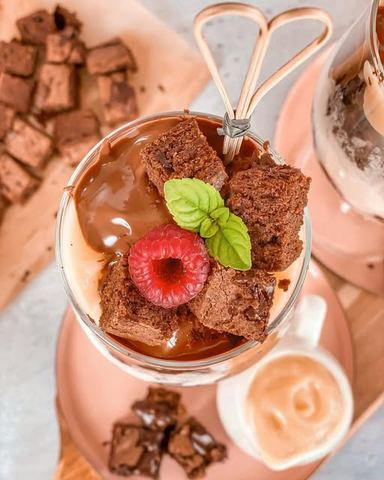

Toooliko je dobro, da vredi svake kalorije

Moja beleška
SačuvanoIstina je, ovo je prava kalorična čokoladna bomba, rashladjena sladoledom i pudingom, ali verujte, RAJ za nepce☺️☺️☺️ Toooliko je dobro, da vredi svake kalorije 😅 •••••Potrebno je da napravite brownie biskvit, a onda prohladjen iseckate na sitnije kockice, otopite nekih 100 gr mlečne čokolade, spremite puding od vanile (ja sam koristila #dr_oetker koji se ne kuva), izaberete omiljeni sladoled od vanile, možda neku crvenu vockicu, pa redjate u čaše redosledom koji se vama učini zanimljivim. Meni su ove mere bile dovoljne za 4 kupa, a ostalo je i još kolača 🤗
Sastojci
Priprema
Od sastojaka vam je potrebno Pleh oblozite papirom za pečenje, a rernu ugrejte, pa ostavite na 160C Mikserom penasto umutite maslac koji ste prethodno omeksali na sobnoj temperaturi, dodajte obe vrste šećera, jedno po jedno jaje (mešati oko 2 min) Zatim smesi dodati prethodno izmesano brašno, kakao i so. Sve zajedno dobro izmešati pa dodati oko 100 gr sitnije iseckane cokolade i po ukusu mlevenih ili seckanih lešnika i badema. Ostatak iseckane cokolade dodajte preko kolača posle izlivanja smese u pleh. Peče se oko 25 minuta. Prijatno! 🌸
Originalni opis sa Instagrama
Istina je, ovo je prava kalorična čokoladna bomba, rashladjena sladoledom i pudingom, ali verujte, RAJ za nepce☺️☺️☺️ Toooliko je dobro, da vredi svake kalorije 😅 •••••Potrebno je da napravite brownie biskvit, a onda prohladjen iseckate na sitnije kockice, otopite nekih 100 gr mlečne čokolade, spremite puding od vanile (ja sam koristila #dr_oetker koji se ne kuva), izaberete omiljeni sladoled od vanile, možda neku crvenu vockicu, pa redjate u čaše redosledom koji se vama učini zanimljivim. Meni su ove mere bile dovoljne za 4 kupa, a ostalo je i još kolača 🤗 •••••Brownie🌸🌸🌸 Od sastojaka vam je potrebno -250gr maslaca -300gr secera -5 vanil šećera -4 jaja -200gr brašna -100gr kakaa -1/2 kašičice soli -200gr crne cokolade (70%kakao) -100gr pečenog mlevenog lešnika ili badema (može i kombinacija) Pleh oblozite papirom za pečenje, a rernu ugrejte, pa ostavite na 160C Mikserom penasto umutite maslac koji ste prethodno omeksali na sobnoj temperaturi, dodajte obe vrste šećera, jedno po jedno jaje (mešati oko 2 min) Zatim smesi dodati prethodno izmesano brašno, kakao i so. Sve zajedno dobro izmešati pa dodati oko 100 gr sitnije iseckane cokolade i po ukusu mlevenih ili seckanih lešnika i badema. Ostatak iseckane cokolade dodajte preko kolača posle izlivanja smese u pleh. Peče se oko 25 minuta. Prijatno! 🌸 • • • #browniecup #brownies #cokoladnabomba #sladoled #sladoledodvanile #droetkerpuding #cokoladnibrauni #čokoladnibrownie #rajzanepce #idejezadezert #ukusnoilepo #rashladileto #uzivajumomentu #uzivajuukusu #uzivajuvikendu #zasladise